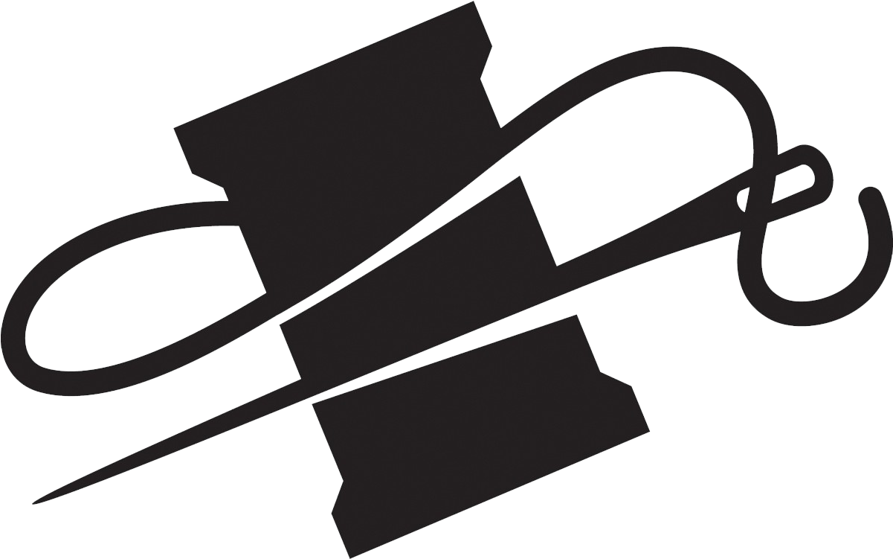
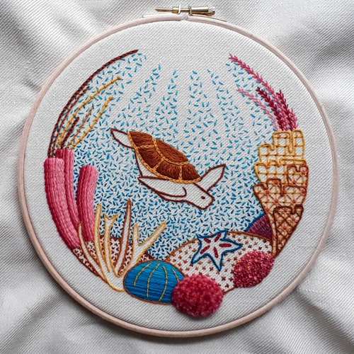

|  | Home | Sewing | Embroidery | Knitting | Gallery |
| My first experiences in embroidery began shortly after I
began sewing. I found that my favorite part of sewing was attaching buttons to garments. I decided to
take this further by using different colored thread for the buttons and eventually colorful
embellishments on other parts of the garment. I was then able to find tutorials online for more intricate
stitches, and eventually I started individual embroidery projects that were more than just embellishments
on larger pieces. In total, I have been embroidering for almost five years, and I have been lucky enough to only have to do projects that I want to. I intend to keep embroidery and all of the other forms of fiber art that I currently participate in as hobbies rather than trying to make a living off of them. I have made gifts for others before, but I mainly work for myself. |
 |
Embroidery is not known to be a sustainable craft. Much like other fiber arts, it produces a moderate amount of waste (in this case, thread) that generally cannot be incorporated into other embroidery projects. With this in mind, I tend to save any scrap thread or fabric that I generate from any craft, including embroidery projects, to be used later as filling for stuffed projects like stuffed animals. This saves me a lot of money because Poly-Fil (the most popular brand of polyester filling) is somewhat expensive. This also benefits me personally because I happen to be mildly allergic to polyester, and the fibers in Poly-Fil irritate my skin when I am not wearing gloves. I also have the benefit of not having to worry about as many microplastics finding their ways into various corners of my home from Poly-fil, and saving scrap greatly reduces the time I spend cleaning up after any project.
I am what I refer to as a "casual environmentalist," and this mindset shows itself in the way that I craft. My mindset with sustainability is that I generally do what saves me money and works best for my current project, and that happens to be reusing scrap fabric and thread, but that also involves purchasing less sustainable materials. Synthetic thread (i.e. polyester) comes in a much wider variety of colors, does not need to be waxed like cotton thread does, and generally is less expensive. Although I have strong opinions about the environment, I tend not to worry about my personal carbon footprint or the amount of waste that I produce mainly because I know that whatever I do, reusing the same things for years upon years won't stop large corporations from polluting our environment, and it won't eliminate my need to use my car to drive six hours home during breaks from college.
Although I have not worked on embroidery much recently, and most of my recent projects are just small fixes to clothing, I did do a large embroidery piece for one of my final projects in my senior year of high school. That piece remains unfinished, but I am still proud of the amount of work that I put into it.
I have, though, recently begun learning how to do cross-stitch, and I have been thoroughly enjoying it. I am especially fond of pieces that deliver ominous or threatening messages but are surrounded by flowers or other cute things. Conversely, I also like more calm and soothing messages posed next to skulls or flames. I have always been a fan of juxtaposition in literature and film, and this seems to be just an extension of that.